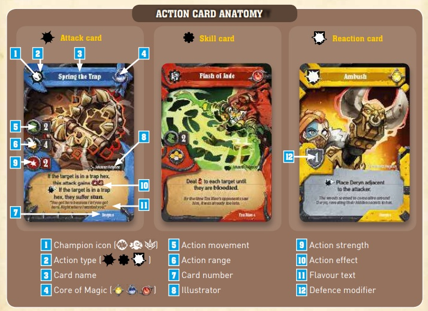

Superfantasybrawl
Board Game Arena 官方规则文档
Background
Objective
Be the first player to gain 5 Victory Points. Victory Points are gained by accomplishing challenges or by defeating your enemy Champions.
How to Play
Beginning/Setup
Each player starts by choosing three champions for their team. Each champion comes with a set of 6 cards (2 blue, 2 yellow, 2 red), representing manipulation, creation, and destruction. These are shuffled together and form a player's deck.
Next, each player chooses 2 locations to place traps. There are 6 possible places for traps.
Each player draws 5 cards, discards any they wish, then draws replacement cards for each.
Each player places their three Champions on a hex in their deployment area.
Rounds and Turns
Each round consists of the first player's turn, then the second player's turn. Afterwards, the challenge track advances and another round begins.
Player Turn
- Scoreboard Phase: If the player has fulfilled any of the conditions for the challenges, the player earns the appropriate number of VPs.
- Activation Phase: The active player play cards. Each card's color represents one of your 3 magic cores (red, yellow, and blue). When you use a card, the corresponding magic core is exhausted. No other cards of that color can be played that round. If you have magic cores but no cards of that color, you can execute standard actions. These actions are weaker, but don't need cards.
- Upkeep Phase: Cores are restored, the hand is discarded, and a new hand of 5 cards is drawn.
Cards

- Champion Icon: Identifies the Champion the card will control
- Action Type: Attack, Skill, or Reaction
- Card Name: Title of the card
- Core of Magic: Magic core that will be used when played (also depicted in the card's color). If the core is already exhausted, the card will be unplayable.
- Action Movement: Indicates how many hexes the Champion can move before executing the action.
- Action Range: Range of the card's effect: melee (must be adjacent), indirect (a thrown object within the indicated number of hexes, ignores obstacles like statues or other Champions), direct (a straight shot within the indicated number of hex spaces), or area of effect (AoE).
- Card Number: Identifies card
- Illustrator: Artist of the card
- Action Strength: Number of HP damage to the opponent
- Action Effect: Most cards have text indicating other effects that can or will happen when the card is played. Some can happen before damage is dealt (pre-attack: a left-facing arrow) or after (post-attack: a right-facing arrow)
- Flavor Text: Describes character, action, or backstory
- Defense Modifier: Reaction cards show a shield with a number, indicating how much damage is reduced. These cards must be played on the other player's turn. If they are played, they will exhaust their magic core, making that color unable to be used during the reacting player's turn.
Attack Card Resolution
- Use as much of the card’s movement (green boot) as you choose
- Resolve any pre-attack abilities
- Choose target(s)
- Opponent chooses whether to play Reactions
- The target's defense value is subtracted from the current strength value of the attack
- Resolve attack damage
- Resolve post-attack abilities from Reactions
- Resolve post-attack abilities from the Attack card
Check the range and targeting icons to determine which rules apply for the attack. Some attacks have a minimum range, and any enemy closer than that is not an eligible target.
Traps
Some hexes have trap tokens. A trap triggers when a Champion enters the hex in which it is placed, whether it moved there by choice or was moved by another Champion. The trap token is flipped and an effect is applied (loss of hit points, loss of remaining movement, or discard a card of that Champion). The Champion may then complete the remaining movement (if available). When a trap is triggered, the player whose Champion triggered the trap places a new trap on a different empty trap hex.
How to Score Victory Points
If both players reach 5 VPs simultaneously (resulting in a draw), the non-active player wins.
Challenge Track
At the end of each round (after all players have taken a turn), a new Challenge card is drawn and all Challenge cards move one space to the right. Challenges that move off the rightmost space are discarded. The value of the Challenge (in VPs) depends on where on the track the Challenge is when it is completed (during the Scoreboard Phase).
Defeating an Enemy
On each Champion's character card is a number representing their hit points. When a Champion takes an amount of damage equal or greater than their hit points, they are taken "out of action". That means the Champion is moved outside the arena, near the deployment area. The Champion's hit points are restored and it can be moved on the player's next turn. Champions outside the arena cannot be targeted or damaged by card effects. But they also cannot be used until the player uses an action to move the character back into the arena.
The player with the Champion who defeated the enemy gets 1 VP. The Champion also "levels up". This means the character card is flipped over and the character gains a new ability. A Champion can only "level up" once. Hit points are not restored when a Champion "levels up".
Keywords
Movement
Moving an Ally
- Dash X: The dashing Champion may move in a straight line (in the same hex row) up to the number indicated. This takes place after any regular movement.
- Jump X: A Champion may move up to X hexes. Enemy Champions, statues, and traps are ignored and not activated (unless the Champion ends their movement on one).
- Place: Remove a Champion from its current location and place it in the new location as described by the effect.
- Swoop X: Champion moves in a straight line within the same hex row up to X hexes. Enemy Champions, statues, and Traps are ignored and not activated (unless the Champion ends their movement on one).
Moving an Enemy
- Fear X: A Champion with fear must Dash X in a chosen direction away from the source of the fear.
- Force X: Player may move the target up to X hexes in any direction.
- Pull X: Target is pulled towards the active Champion in a straight line, within the same row of hexes, for X hexes. A Champion cannot be pulled through a statue or another Champion. If the target is pulled onto a trap hex, the trap is triggered. If a Champion cannot be pulled the full distance, they suffer damage equal to the remaining distance.
- Push X: Target is pushed away from the active Champion in a straight line, within the same row of hexes, for X hexes. A Champion cannot be pushed through a statue or another Champion. If the target is pushed onto a trap hex, the trap is triggered. If a Champion cannot be pushed the full distance, they suffer damage equal to the remaining distance.
- Root: Champion instantly loses any remaining movement and cannot make any further movement action (e.g., dashing, swooping, jumping, etc.). The Champion may attack and use skills normally. This Champion can still be "placed".
Attack
- Bloodied: A Champion is bloodied if he/she has taken 3 or more damage. (Note: the Instruction Booklet says when a Champion has half or fewer HP remaining, but this is not BGA's policy.)
- Double: Resolve the attack damage step a second time.
- Lifesteal: Attacking Champion is healed equal to attack damage.
- Poison X: If damage was dealt to a target during an attack, deal X additional damage to the target.
- Stun: Player must discard a card of that Champion from their hand or reveal a hand showing no cards of that Champion.
Other
- Control: A player controls an area when they have more Champions in that area than their opponent.
- Plan X: Player may put up to X cards from their hand on top of their deck.